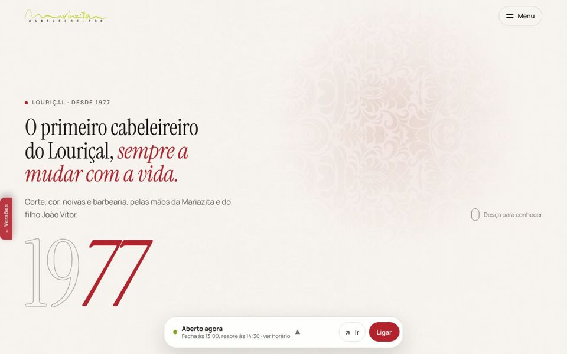
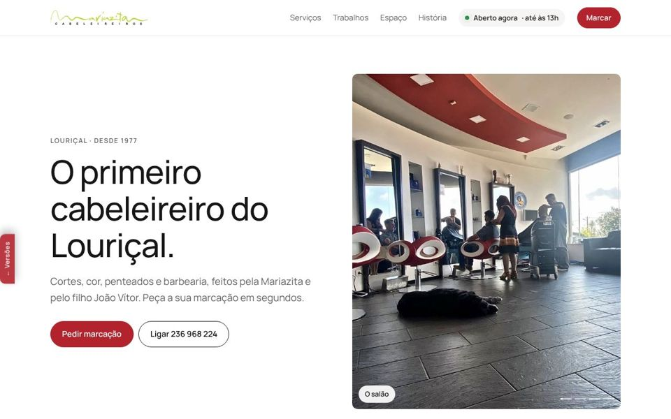
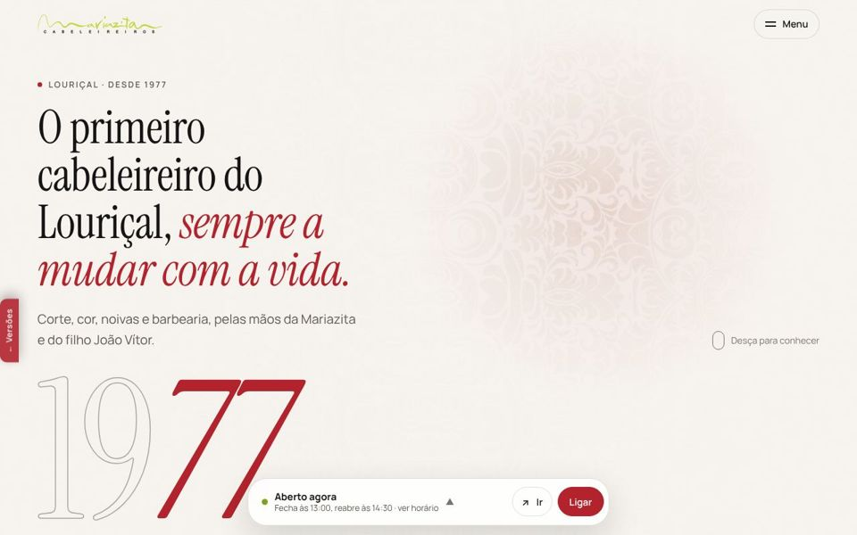
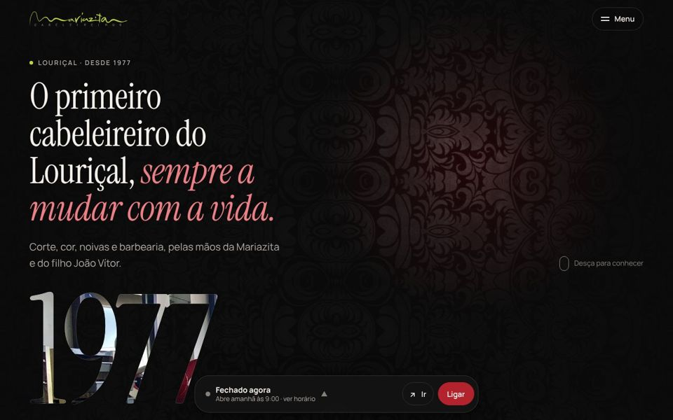
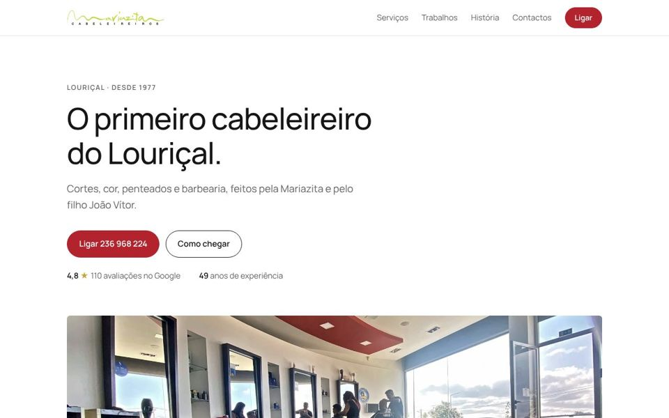
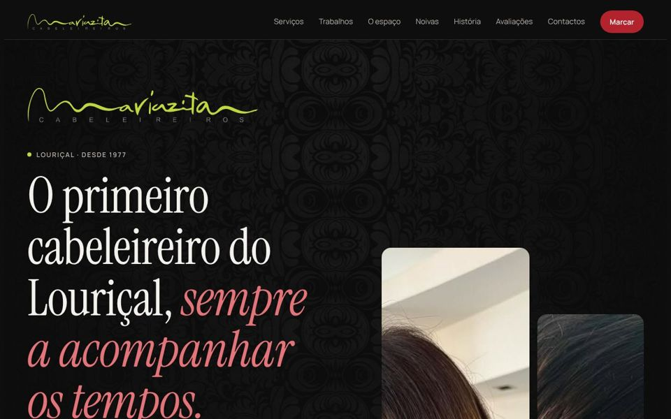
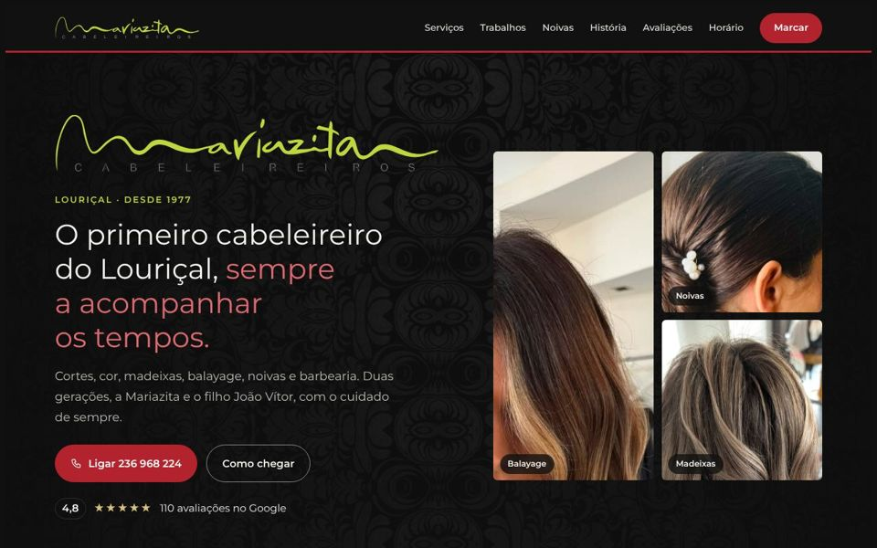
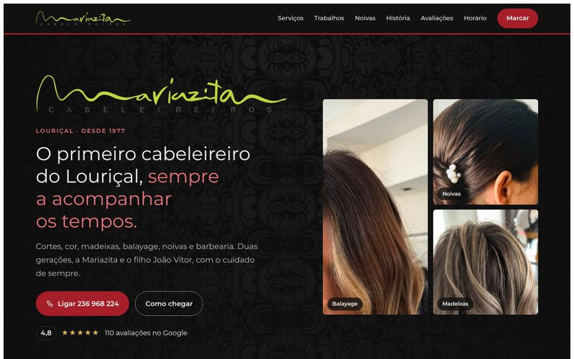
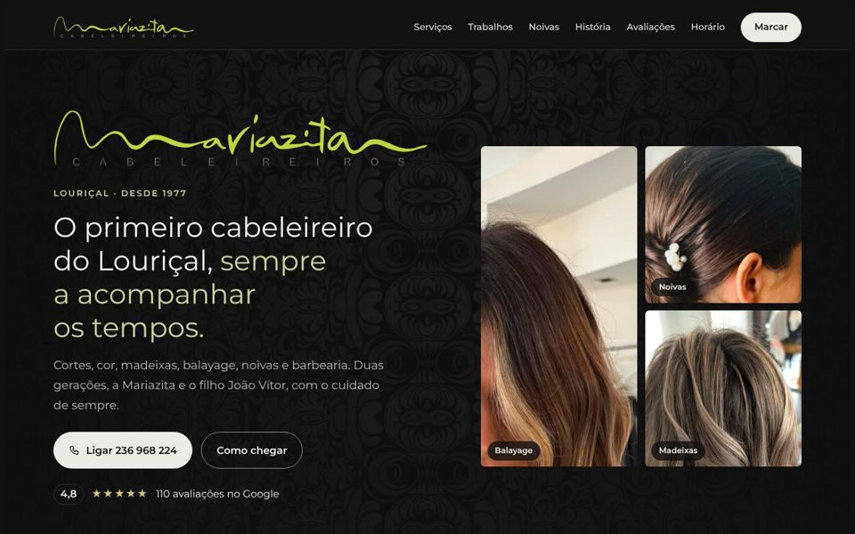

Inovadora leve
A inovadora clara com letras mais pequenas e mais espaço: as mesmas funcionalidades, com um aspeto mais clean.
Abrir →
Clean+
O aspeto simples e branco, com estado "Aberto agora", filtros nos trabalhos, visita ao espaço e um assistente que prepara o pedido de marcação por SMS.
Abrir →
Inovadora clara
A versão inovadora em fundo claro, com a lona em tons creme e o vermelho do salão.
Abrir →
Inovadora
Luz que revela a lona, estado "Aberto agora" sempre visível, fotos para deslizar, visita guiada ao salão e história com seletor de tempo.
Abrir →
Simples e clean
Fundo branco, uma só letra, muito espaço. Vermelho só no botão de ligar.
Abrir →
Moderna editorial
Preto, letras de revista, serviços numerados, carril de fotos e a secção "O espaço".
Abrir →
Vermelho, verde e preto
Base preta com a lona, botões vermelhos e o verde do logótipo nos detalhes.
Abrir →
Branco e vermelho
As cores do salão por dentro: corpo branco, abertura e rodapé pretos.
Abrir →
Preta
A primeira proposta, toda em preto com a lona do logótipo.
Abrir →